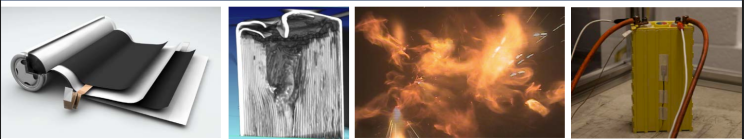
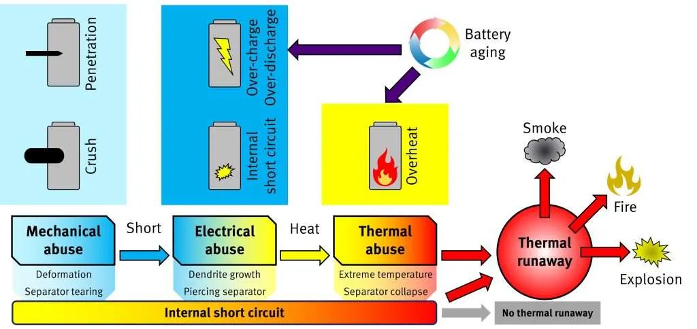
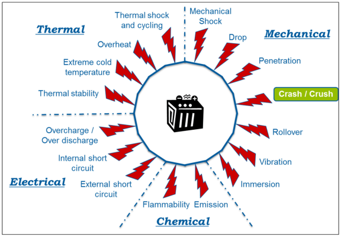
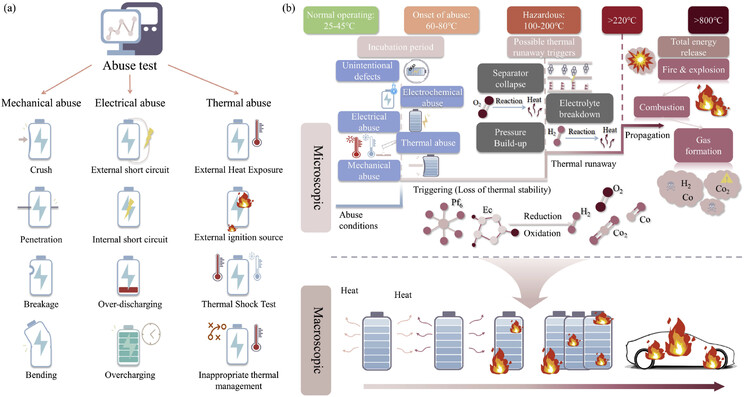
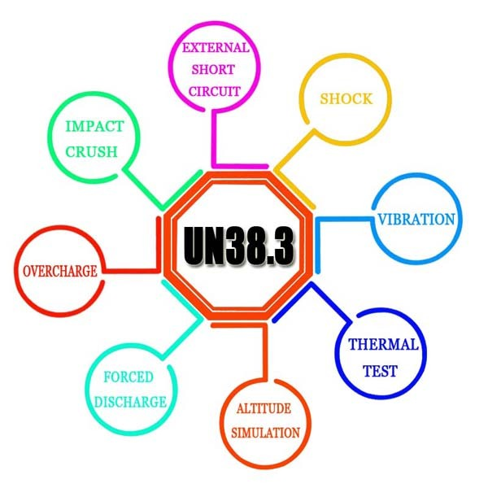
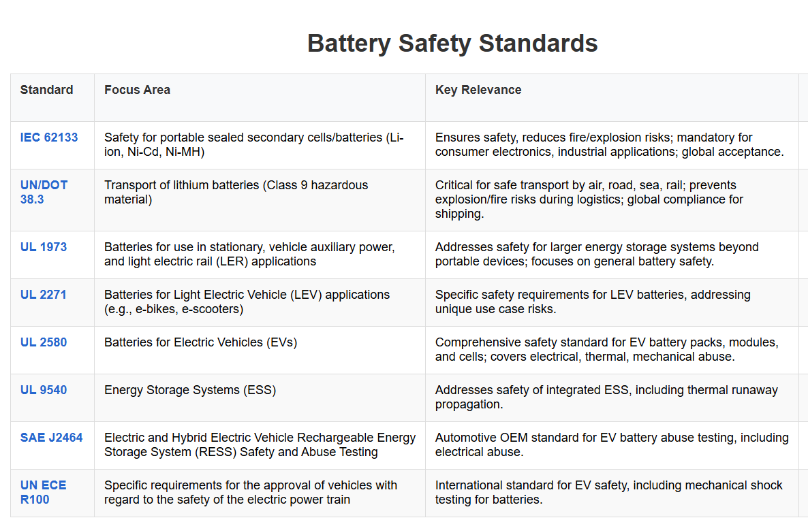
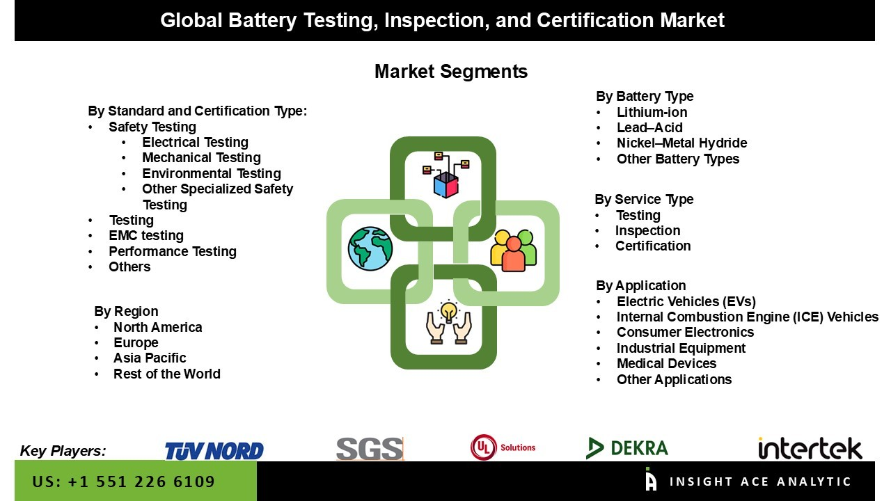
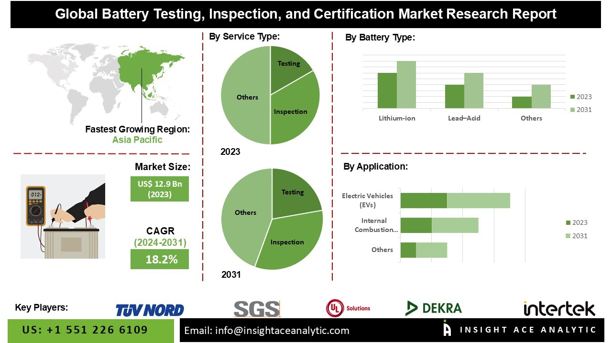
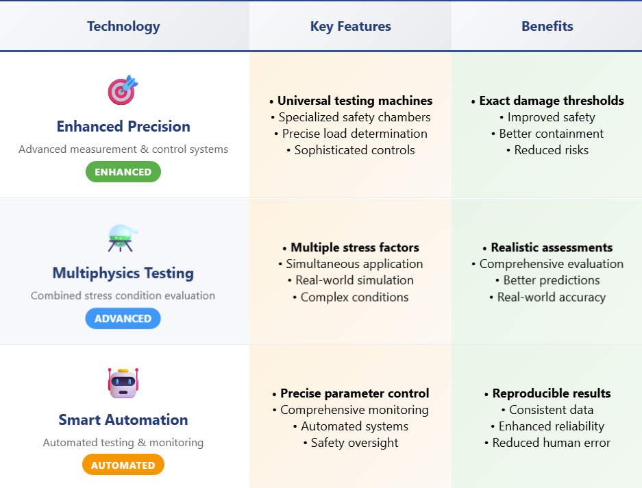

Battery abuse testing has emerged as a cornerstone of modern battery certification, serving as the ultimate safety net between cutting-edge energy storage technology and consumer protection. As lithium-ion batteries power everything from smartphones to electric vehicles, rigorous abuse testing protocols ensure these energy-dense devices can withstand extreme conditions without posing risks to users.
This comprehensive testing approach subjects batteries to conditions far beyond normal operational parameters, including crushing, thermal extremes, electrical overloads, and impact scenarios, ultimately determining whether a battery meets stringent international safety standards required for global market access.

Understanding Battery Abuse Testing: Beyond Normal Operations
Battery abuse testing represents a specialized form of safety evaluation that deliberately subjects batteries to extreme conditions that exceed normal operational stresses. Unlike standard performance testing, abuse testing pushes batteries to their absolute limits to evaluate how they respond when faced with potentially dangerous scenarios. This testing methodology is designed to simulate the most severe conditions a battery might encounter during its lifecycle, including scenarios that could occur during transportation, handling, or unexpected operational failures.
The fundamental principle underlying abuse testing is the recognition that batteries, particularly lithium-ion variants, store significant amounts of energy in compact packages. When this energy is released uncontrollably, it can result in thermal runaway, fires, or explosions. By systematically exposing batteries to controlled abuse conditions, testing laboratories can identify potential failure modes and ensure that even under extreme duress, batteries maintain acceptable safety margins.

Modern abuse testing protocols have evolved to address the increasing energy density of contemporary battery technologies. As manufacturers push the boundaries of energy storage capacity, the potential consequences of battery failure have correspondingly increased. This reality has necessitated more sophisticated and comprehensive abuse testing procedures that can accurately predict battery behavior under a wide spectrum of extreme conditions.
Comprehensive Categories of Abuse Testing
Mechanical Abuse Tests: These tests evaluate a battery's response to physical stress and its structural integrity. They simulate real-world physical impacts, from minor drops to severe collisions. Examples include:
- Crush Testing: Applying compressive forces to assess resilience to physical collapse or impact.
- Nail Penetration: Simulating internal short circuits by puncturing the battery, often leading to thermal runaway if the separator is damaged.
- Vibration Testing: Subjecting batteries to random or sinusoidal vibrations to simulate operational stresses like driving on unpaved roads or continuous movement.
- Impact/Shock Testing: Evaluating response to sudden physical shocks, simulating drops or collision impacts.
- Tensile and Compression Tests: Examining the strength of battery components (electrodes, separators) under various stresses.
- Drop and Rotation Tests: Assessing structural integrity under free fall or rotational forces.

Electrical Abuse Tests: These tests assess the battery's behavior under abnormal electrical conditions, which can trigger extreme temperature rises and chemical reactions leading to thermal runaway. Examples include:
- Overcharge/Over-discharge: Exposing the battery to voltages beyond its specified limits, a common form of electrical abuse.
- External Short Circuit: Simulating a direct connection between battery terminals, leading to rapid current discharge and heat generation.
- Overvoltage/Undervoltage: Testing performance under extreme voltage fluctuations.
- Forced Discharge: Discharging the battery beyond its recommended minimum voltage.
- Cycling Tests: Assessing performance over repeated charge/discharge cycles.
Thermal Environmental Abuse Tests: These tests subject batteries to extreme temperature variations and environmental stressors to understand their performance and safety hazards outside optimal conditions. Examples include:
- Extreme Temperature Testing: Exposing batteries to very high and low temperatures (e.g., -70°C to +175°C or -60°C to +170°C) for extended periods.
- Thermal Cycling: Repeatedly exposing the battery to a wide temperature range to simulate diverse climatic conditions and assess adaptability.
- Fire Resistance/Exposure: Directly exposing the battery to flames to evaluate its ability to protect internal components and prevent catastrophic failure.
- Altitude Simulation: Testing battery behavior under low-pressure conditions at high altitudes (up to 32,000m).
- Corrosive Salt Fog and Dust Testing: Assessing durability and performance in harsh environmental conditions.

International Standards and Certification Requirements
UN 38.3 Transportation Standards
The United Nations UN 38.3 standard represents the foundational requirement for lithium-ion battery transportation, establishing comprehensive testing procedures that ensure batteries are suitable for international shipping. This standard encompasses eight distinct testing procedures, designated T1 through T8, each addressing specific transportation-related risks. Altitude simulation testing (T1) subjects batteries to atmospheric conditions equivalent to 50,000 feet elevation, while thermal testing (T2) involves repeated exposure to extreme temperature cycles.

Vibration and shock testing (T3 and T4) evaluate battery response to transportation-related mechanical stresses, with vibration testing subjecting batteries to progressively increasing acceleration forces across multiple frequency ranges. The shock testing protocol applies 34.6g shock pulses in both positive and negative directions, simulating the impact forces that could occur during transportation handling.
UL and IEC Safety Standards
UL 1642 establishes comprehensive safety requirements specifically for lithium battery cells, focusing on ensuring that batteries do not catch fire or explode under abuse conditions. The standard requires cells to undergo electrical abuse testing including short circuit, abnormal charging, and forced discharge scenarios. Mechanical testing protocols include crush, impact, shock, and vibration assessments, while environmental testing exposes batteries to heating, temperature cycling, and low-pressure conditions.

IEC 62133 provides parallel safety requirements for secondary cells and batteries containing alkaline or other non-acid electrolytes. This standard emphasizes thermal abuse testing, requiring cells to withstand exposure to 130°C for specified durations without exhibiting fire, explosion, or leakage. The standard also includes comprehensive electrical abuse testing protocols, including external short circuit testing and temperature cycling requirements.
Table 3: Essential Global Battery Safety Standards and Their Relevance

Market Access and Regulatory Compliance
Battery certification through abuse testing serves as the gateway to global market access, enabling manufacturers to demonstrate compliance with international safety standards. Regulatory bodies worldwide require evidence of comprehensive abuse testing before granting market authorization for battery products. This certification process not only ensures consumer safety but also provides manufacturers with competitive advantages in increasingly regulated markets.
The certification process typically involves third-party testing laboratories that possess the specialized equipment and expertise necessary to conduct comprehensive abuse testing safely. These facilities must maintain strict safety protocols due to the inherent risks associated with deliberately subjecting high-energy batteries to extreme conditions. The testing results provide manufacturers with detailed documentation of battery safety performance that can be submitted to regulatory authorities worldwide.

Certified batteries carry significant market value, as they provide consumers and businesses with confidence that the products meet rigorous safety standards. This certification becomes particularly important for applications such as electric vehicles and energy storage systems, where battery failure could have serious consequences for users and property. The certification process also helps manufacturers identify design improvements that can enhance both safety and performance.
Safety Risk Mitigation and Consumer Protection
Abuse testing serves as a critical risk mitigation tool, identifying potential failure modes before batteries reach consumers. By subjecting batteries to controlled extreme conditions, manufacturers can evaluate whether their products maintain safety margins under the most challenging scenarios. This proactive approach helps prevent incidents that could result in property damage, personal injury, or loss of life.
Abuse testing serves as a critical risk mitigation tool, identifying potential failure modes before batteries reach consumers. By subjecting batteries to controlled extreme conditions, manufacturers can evaluate whether their products maintain safety margins under the most challenging scenarios. This proactive approach helps prevent incidents that could result in property damage, personal injury, or loss of life.

The testing protocols are designed to simulate real-world scenarios where batteries might be subjected to abuse conditions, whether through accidents, mishandling, or equipment failures. By understanding how batteries respond to these conditions, manufacturers can implement design improvements that enhance safety performance. This might include improved thermal management systems, enhanced protective circuitry, or structural modifications that better contain potential failures.
Technological Advances in Testing Methodologies
Recent developments in abuse testing technology have enhanced both the precision and safety of testing procedures. Advanced testing systems now integrate sophisticated measurement and control capabilities that allow for more precise determination of the mechanical loads that trigger battery damage. These systems combine universal testing machines with specialized safety chambers designed to contain potential hazards during testing.
The integration of multiphysics testing approaches allows for more comprehensive evaluation of battery performance under combined stress conditions. Rather than testing individual abuse scenarios in isolation, modern testing protocols can simultaneously apply multiple stress factors, providing more realistic assessments of battery behavior under complex real-world conditions.

Automated testing systems have also improved the reproducibility and consistency of abuse testing results. These systems can precisely control testing parameters while maintaining comprehensive safety monitoring throughout the testing process. This technological advancement has enhanced the reliability of testing data while reducing the risks associated with conducting inherently dangerous testing procedures.
Conclusion
Battery abuse testing stands as an indispensable component of modern battery certification, providing the safety foundation that enables the widespread adoption of advanced energy storage technologies. Through comprehensive evaluation of electrical, thermal, and mechanical abuse scenarios, these testing protocols ensure that batteries can maintain safety margins even under extreme conditions that far exceed normal operational parameters. The rigorous standards established by international organizations, including UN 38.3, UL 1642, and IEC 62133, provide manufacturers with clear benchmarks for safety performance while giving consumers confidence in certified battery products.